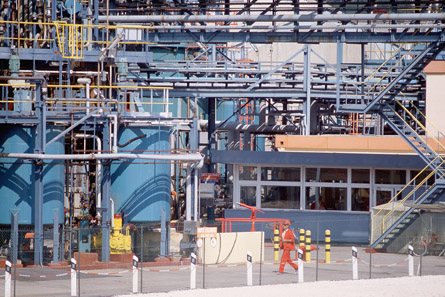

© 2008 Jupiterimages Corporation
In Module 7 you will examine chemical equilibrium. Chemical equilibrium is something you may not have thought much about, but it is present and it affects many of the chemical systems you have investigated in this course. For example, in the last module you prepared esters. When you cooled the esters on ice, you were manipulating an equilibrium so that you would be better able to collect and observe the ester you had synthesized.
Other examples of chemical equilibrium are found in biological systems, chemical interactions, and industrial applications. In this module you will investigate many systems and how they demonstrate the principles of systems at equilibrium. You will learn how equilibrium can be classified, studied, and manipulated. You will learn how to predict changes to equilibrium when a system that appears to remain constant is stressed, and you will learn the scientific principles involved when systems are stressed.
In Module 7 you will investigate the following questions:
As you approach the end of the module, you will come to understand many aspects of equilibrium and how systems in equilibrium behave. You will be asked to pay special attention to specific properties of each of the systems you investigate.
Remember that each lesson will also be organized around questions intended to guide your study. As you proceed through Module 7, you may record answers to these questions and any interrelationships that exist between them in a concept map or graphic organizer. More information is available in the Unit D Concept Organizer. In the Module 7 Summary you will receive further information on how you can use your concept map or graphic organizer to review the concepts you studied in this module.